Fire-Plant Invasions-TBD
2018-08-07 11:43:14
- Installations Visited and Plots Sampled
- Canopy Cover Data
- Species Data - 1-meter Quadrats
- Tree Data
- Sub-plot sapling/shrub data
- Biomass data sampled at 25cm quadrats
- Host Abundance Estimates
- Tick Abundance
- Tick abundance vs. plot-level averages
- Host abundance
- Initial/exploratory linear (OLS) models
- Cogongrass Data Sampled from Invasions
- Compare All Quadrat Data to Subset of Data
Installations Visited and Plots Sampled
- 8 installations
- 13 different years since fire
- 78 different plots, some multiple times
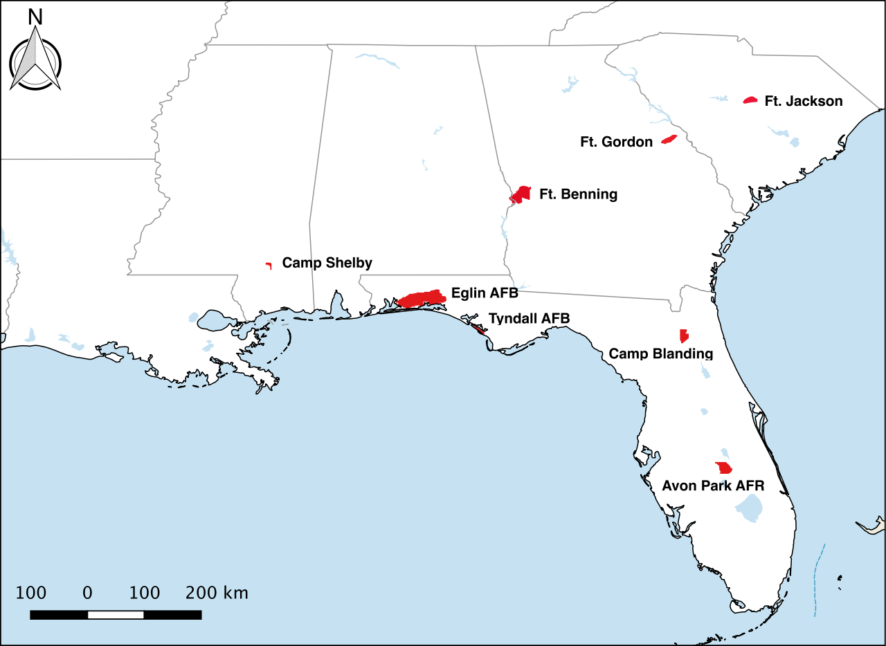


Canopy Cover Data
## installation plot_id pid
## Length:82 Length:82 Length:82
## Class :character Class :character Class :character
## Mode :character Mode :character Mode :character
##
##
##
##
## date visit_year avg_canopy_cover sd_canopy_cover
## Min. :2017-06-08 Min. :2017 Min. : 8.06 Min. : 0.520
## 1st Qu.:2017-08-30 1st Qu.:2017 1st Qu.:32.76 1st Qu.: 6.481
## Median :2018-05-31 Median :2018 Median :47.84 Median :10.238
## Mean :2018-02-28 Mean :2018 Mean :51.60 Mean :13.016
## 3rd Qu.:2018-06-27 3rd Qu.:2018 3rd Qu.:70.33 3rd Qu.:18.522
## Max. :2018-07-26 Max. :2018 Max. :97.76 Max. :39.496
## NA's :1 NA's :1 NA's :7 NA's :8
## n_obs se_canopy_cover
## Min. : 1.000 Min. : 0.260
## 1st Qu.: 4.000 1st Qu.: 3.240
## Median : 4.000 Median : 5.119
## Mean : 4.146 Mean : 6.542
## 3rd Qu.: 4.000 3rd Qu.: 9.261
## Max. :20.000 Max. :19.748
## NA's :8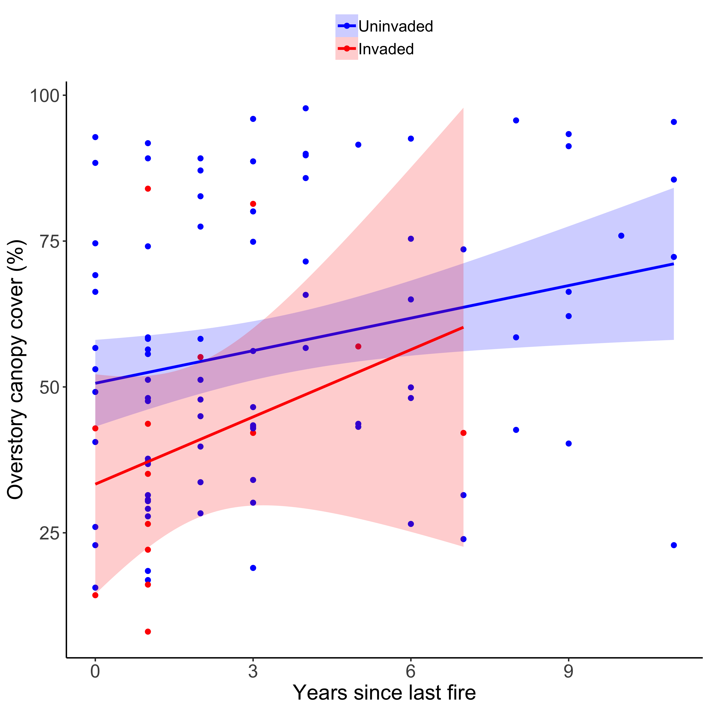
Species Data - 1-meter Quadrats
## installation plot_id date visit_year
## Length:80 Length:80 Min. :2017-06-07 Min. :2017
## Class :character Class :character 1st Qu.:2017-08-26 1st Qu.:2017
## Mode :character Mode :character Median :2018-05-31 Median :2018
## Mean :2018-02-22 Mean :2018
## 3rd Qu.:2018-06-27 3rd Qu.:2018
## Max. :2018-07-26 Max. :2018
## pid avg_woody_ht1 avg_woody_ht_all avg_herb_ht1
## Length:80 Min. : 10.00 Min. : 13.78 Min. : 0.00
## Class :character 1st Qu.: 32.44 1st Qu.: 30.74 1st Qu.: 22.19
## Mode :character Median : 49.00 Median : 45.43 Median : 31.25
## Mean : 59.17 Mean : 55.84 Mean : 36.20
## 3rd Qu.: 75.88 3rd Qu.: 73.51 3rd Qu.: 44.06
## Max. :188.50 Max. :173.92 Max. :128.50
## avg_herb_ht_all avg_litter_depth1 avg_litter_depth_all avg_pct_green
## Min. : 0.00 Min. : 0.750 Min. : 0.7917 Min. : 1.25
## 1st Qu.: 21.12 1st Qu.: 2.250 1st Qu.: 2.4167 1st Qu.:17.50
## Median : 27.96 Median : 3.250 Median : 3.4375 Median :29.38
## Mean : 32.82 Mean : 3.962 Mean : 3.9458 Mean :32.76
## 3rd Qu.: 38.81 3rd Qu.: 4.750 3rd Qu.: 4.7292 3rd Qu.:49.06
## Max. :106.50 Max. :11.000 Max. :11.5833 Max. :76.25
## avg_pct_litter avg_pct_wood avg_pct_bare imcy_inv
## Min. : 3.75 Min. : 0.125 Min. : 0.000 Uninvaded:68
## 1st Qu.: 44.69 1st Qu.: 2.375 1st Qu.: 1.938 Invaded :12
## Median : 73.75 Median : 4.000 Median : 6.500
## Mean : 66.80 Mean : 5.188 Mean :14.812
## 3rd Qu.: 88.38 3rd Qu.: 6.312 3rd Qu.:20.625
## Max. :100.00 Max. :20.000 Max. :76.250
## visit_date last_fire_year notes years_since_fire
## Min. :2017-06-07 Min. :2006 Length:80 Min. : 0.000
## 1st Qu.:2017-08-26 1st Qu.:2012 Class :character 1st Qu.: 1.000
## Median :2018-05-30 Median :2015 Mode :character Median : 2.500
## Mean :2018-02-22 Mean :2014 Mean : 3.425
## 3rd Qu.:2018-06-27 3rd Qu.:2017 3rd Qu.: 5.250
## Max. :2018-07-26 Max. :2018 Max. :11.000
## xcoord_lon ycoord_lat installation_full_name
## Min. :-89.11 Min. :27.54 Length:80
## 1st Qu.:-85.52 1st Qu.:29.85 Class :character
## Median :-82.02 Median :30.30 Mode :character
## Mean :-83.61 Mean :30.62
## 3rd Qu.:-81.31 3rd Qu.:31.15
## Max. :-80.75 Max. :34.09

## Classes 'tbl_df', 'tbl' and 'data.frame': 3018 obs. of 21 variables:
## $ Order : int 231 232 233 234 235 236 237 238 239 240 ...
## $ installation : chr "blanding" "blanding" "blanding" "blanding" ...
## $ date : Date, format: "2017-06-07" "2017-06-07" ...
## $ plot_id : chr "c1" "c1" "c1" "c1" ...
## $ transect_id : chr "east" "east" "east" "east" ...
## $ quadrat_id : chr "e10" "e10" "e10" "e30" ...
## $ veg_id : chr "qula" "arst5" "pigr" "limi" ...
## $ pct_cover : num 20 30 1 20 15 2 1 0.5 0.5 2 ...
## $ ht_under50cm : int NA NA NA NA NA NA NA NA NA NA ...
## $ ht50_100cm : int 1 NA NA NA 1 NA NA NA NA 1 ...
## $ ht_over100cm : int NA NA NA NA NA NA NA NA NA NA ...
## $ 1cm_wg_stems : chr NA NA NA NA ...
## $ Notes : chr NA NA NA NA ...
## $ scientific_name : chr "Quercus laevis" "Aristida stricta" "Pityopsis graminifolia" "Licania michauxii" ...
## $ functional_group : chr "tree" "graminoid" "forb" "shrub" ...
## $ Genus : chr "Quercus" "Aristida" "Pityopsis" "Licania" ...
## $ Species : chr "laevis" "stricta" "graminifolia" "michauxii" ...
## $ Status : chr "native" "native" "native" "native" ...
## $ functional_group__1: chr "tree" "graminoid" "forb" "shrub" ...
## $ pid : chr "blanding c1" "blanding c1" "blanding c1" "blanding c1" ...
## $ visit_year : num 2017 2017 2017 2017 2017 ...## Order installation date plot_id
## Min. : 231 Length:3018 Min. :2017-06-07 Length:3018
## 1st Qu.: 985 Class :character 1st Qu.:2017-07-19 Class :character
## Median :1739 Mode :character Median :2017-09-23 Mode :character
## Mean :1739 Mean :2017-12-08
## 3rd Qu.:2493 3rd Qu.:2018-05-31
## Max. :3247 Max. :2018-07-26
## NA's :1
## transect_id quadrat_id veg_id pct_cover
## Length:3018 Length:3018 Length:3018 Min. : 0.500
## Class :character Class :character Class :character 1st Qu.: 0.500
## Mode :character Mode :character Mode :character Median : 2.000
## Mean : 7.079
## 3rd Qu.: 6.000
## Max. :99.000
## NA's :6
## ht_under50cm ht50_100cm ht_over100cm 1cm_wg_stems
## Min. : 0.000 Min. : 1.0 Min. : 1.00 Length:3018
## 1st Qu.: 1.000 1st Qu.: 1.0 1st Qu.: 1.00 Class :character
## Median : 3.000 Median : 2.0 Median : 1.00 Mode :character
## Mean : 8.437 Mean : 11.9 Mean : 3.21
## 3rd Qu.: 8.000 3rd Qu.: 3.0 3rd Qu.: 3.00
## Max. :201.000 Max. :866.0 Max. :43.00
## NA's :1591 NA's :2708 NA's :2851
## Notes scientific_name functional_group
## Length:3018 Length:3018 Length:3018
## Class :character Class :character Class :character
## Mode :character Mode :character Mode :character
##
##
##
##
## Genus Species Status
## Length:3018 Length:3018 Length:3018
## Class :character Class :character Class :character
## Mode :character Mode :character Mode :character
##
##
##
##
## functional_group__1 pid visit_year
## Length:3018 Length:3018 Min. :2017
## Class :character Class :character 1st Qu.:2017
## Mode :character Mode :character Median :2017
## Mean :2017
## 3rd Qu.:2018
## Max. :2018
## ## # A tibble: 6 x 21
## Order installation date plot_id transect_id quadrat_id veg_id
## <int> <chr> <date> <chr> <chr> <chr> <chr>
## 1 2267 avonpark 2018-05-29 e2 east e10 dicl
## 2 2467 avonpark 2018-05-31 f1 north n10 xyca
## 3 2570 eglin 2018-06-11 a1 east e10 an
## 4 2810 tyndall 2018-06-25 d2 north n10 dicl
## 5 2811 tyndall 2018-06-25 d2 north n10 piel
## 6 3031 jackson 2018-07-12 h1 west w10 saal5
## # ... with 14 more variables: pct_cover <dbl>, ht_under50cm <int>,
## # ht50_100cm <int>, ht_over100cm <int>, `1cm_wg_stems` <chr>,
## # Notes <chr>, scientific_name <chr>, functional_group <chr>,
## # Genus <chr>, Species <chr>, Status <chr>, functional_group__1 <chr>,
## # pid <chr>, visit_year <dbl>## [1] FALSE FALSE FALSE FALSE FALSE FALSE FALSE FALSE FALSE FALSE FALSE
## [12] FALSE FALSE FALSE FALSE FALSE FALSE FALSE FALSE FALSE FALSE FALSE
## [23] FALSE FALSE FALSE FALSE FALSE FALSE FALSE FALSE FALSE FALSE FALSE
## [34] FALSE FALSE FALSE FALSE FALSE FALSE FALSE FALSE FALSE FALSE FALSE
## [45] FALSE FALSE FALSE FALSE FALSE FALSE FALSE FALSE FALSE FALSE FALSE
## [56] FALSE FALSE FALSE FALSE FALSE FALSE FALSE FALSE FALSE FALSE FALSE
## [67] FALSE FALSE FALSE FALSE FALSE FALSE FALSE FALSE FALSE FALSE FALSE
## [78] FALSE FALSE FALSE FALSE FALSE FALSE FALSE FALSE FALSE FALSE FALSE
## [89] FALSE FALSE FALSE FALSE FALSE FALSE FALSE FALSE FALSE FALSE FALSE
## [100] FALSE FALSE FALSE FALSE FALSE FALSE FALSE FALSE FALSE FALSE FALSE
## [111] FALSE FALSE TRUE FALSE FALSE FALSE FALSE FALSE FALSE FALSE FALSE
## [122] FALSE FALSE FALSE FALSE FALSE FALSE FALSE FALSE FALSE FALSE FALSE
## [133] FALSE FALSE FALSE FALSE FALSE FALSE FALSE FALSE FALSE FALSE FALSE
## [144] FALSE FALSE FALSE FALSE FALSE FALSE FALSE FALSE FALSE FALSE FALSE
## [155] FALSE FALSE FALSE FALSE## # A tibble: 273 x 21
## Order installation date plot_id transect_id quadrat_id veg_id
## <int> <chr> <date> <chr> <chr> <chr> <chr>
## 1 2037 blanding 2018-05-19 g1 north w10 ghost gra…
## 2 2046 blanding 2018-05-19 g1 south s10 ghost gra…
## 3 2053 blanding 2018-05-19 g1 east e10 ghost gra…
## 4 2062 blanding 2018-05-19 g1 west w10 forb 11:4…
## 5 2064 blanding 2018-05-19 g1 west w10 ghost gra…
## 6 2110 blanding 2018-05-24 n1 east e10 raco, (ma…
## 7 2183 blanding 2018-05-17 h1 west w10 forb 1:05…
## 8 2190 blanding 2018-05-15 c1 north n10 forb 11:4…
## 9 2202 blanding 2018-05-15 c1 west w10 forb 11:4…
## 10 2208 blanding 2018-05-15 c1 east e10 em 10:32
## # ... with 263 more rows, and 14 more variables: pct_cover <dbl>,
## # ht_under50cm <int>, ht50_100cm <int>, ht_over100cm <int>,
## # `1cm_wg_stems` <chr>, Notes <chr>, scientific_name <chr>,
## # functional_group <chr>, Genus <chr>, Species <chr>, Status <chr>,
## # functional_group__1 <chr>, pid <chr>, visit_year <dbl>## [1] "-" "Ambrosia artemisiifolia"
## [3] "Andropogon spp" "Aristida stricta"
## [5] "Asclepias humistrata" "Asimina angustifolia"
## [7] "Asimina obovata" "Asimina spp."
## [9] "Asteraceae" "Aureolaria pectinata"
## [11] "Baccharis spp." "Balduina angustifolia"
## [13] "Baptisia tinctoria" "Callicarpa americana"
## [15] "Campsis radicans" "Carphephorus paniculatus"
## [17] "Carya spp." "Castanea pumila"
## [19] "Cerastium ssp." "Chamaecrista fasciculata"
## [21] "Chapmannia floridana" "Chaptalia tomentosa"
## [23] "Chara spp." "Chrysoma pauciflosculosa"
## [25] "Cladonia rangiferina" "Cnidoscolus urens"
## [27] "Commelina communis" "Conoclinium coelestinum"
## [29] "Coreopsis major" "Crataegus L."
## [31] "Crotalaria spectabilis" "Croton argyranthemus"
## [33] "Desmodium paniculatum" "Dichanthelium aciculare"
## [35] "Dichanthelium clandestinum" "Dichanthelium spp"
## [37] "Dichanthelium ssp." "Diodia spp."
## [39] "Diodia ssp." "Diospyros virginiana"
## [41] "Elephantopus elatus" "Eragrostis ellioti"
## [43] "Eragrostis spp" "Eriocaulon spp"
## [45] "Eriocaulon ssp." "Eryngium yuccifolium"
## [47] "Eupatorium capillifolium" "Galactia erecta"
## [49] "Galactia regularis" "Galium aparine"
## [51] "Gmelina ssp." "Helenium amarum"
## [53] "Hydrocotyle umbellata" "Hypericum gentianoides"
## [55] "Hypericum hypericoides" "Hypericum ssp."
## [57] "Ilex glabra" "Ilex opaca"
## [59] "Ilex ssp." "Ilex vomitoria"
## [61] "Imperata cylindrica" "Iris pseudacorus"
## [63] "Juncus ssp." "Krameria lanceolata"
## [65] "Lamium amplexicaule" "Liatris Gaertn. ex Schreb. "
## [67] "Liatris ssp." "Licania michauxii"
## [69] "Liquidambar styraciflua" "Lonicera japonica"
## [71] "Lonicera mackii" "Lygodium japonicum"
## [73] "Lyonia ferruginea" "Lyonia fruiticosa"
## [75] "Magnolia virginiana" "Mentha ssp."
## [77] "Mimosa pudica" "Mimosa quadrivalvis"
## [79] "Mimosa ssp." "Mimosa strigillosa"
## [81] "Morella cerifera" "Myriophyllum aquaticum"
## [83] "Opuntia humifusa" "Oxalis articulata"
## [85] "Panicum capillare" "Parnassia spp."
## [87] "Paronychia erecta" "Parthenocissus quinquefolia"
## [89] "Paspalum notatum" "Passiflora caerulea"
## [91] "Persea borbonia" "Phyllanthus urinaria"
## [93] "Physalis arenicola" "Pinus clausa"
## [95] "Pinus elliottii" "Pinus palustris"
## [97] "Pinus taeda" "Pityopsis graminifolia"
## [99] "Pluchea rosea" "Polygala lutea"
## [101] "Polygala nana" "Polygala ssp."
## [103] "Pseudognaphalium spp." "Pteridium caudatum"
## [105] "Pterocaulon pycnostachyum" "Querces spp."
## [107] "Quercus alba" "Quercus chapmanii"
## [109] "Quercus geminata" "Quercus hemisphaerica"
## [111] "Quercus incana" "Quercus laevis"
## [113] "Quercus laurifolia" "Quercus minima"
## [115] "Quercus myrtifolia" "Quercus nigra"
## [117] "Quercus pumila" "Quercus spp."
## [119] "Quercus ssp." "Quercus virginiana"
## [121] "Rhexia virginica" "Rhus copallinum"
## [123] "Rhynchosia cytisoides" "Rubus flagellaris"
## [125] "Rubus ssp." "Sassafras albidum"
## [127] "Scutellaria spp." "Sedge spp."
## [129] "Selaginella spp." "Serenoa repens"
## [131] "Setaria spp." "Smilax auriculata"
## [133] "Smilax glabra" "Smilax spp"
## [135] "Smilax ssp." "Solanaceae"
## [137] "Solidago odora" "Sorghastrum secundum"
## [139] "Sphagnum ssp." "Stachys byzantina"
## [141] "Stillingia sylvatica" "Stipidulicia setaceae"
## [143] "Stlosanthes biflora" "Stylisma spp"
## [145] "Stylisma ssp." "Tephrosia ssp."
## [147] "Tephrosia virginiana" "Toxicodendron radicans"
## [149] "Toxicodendron radicans L." "Tragia ssp."
## [151] "Trifolium spp." "Vaccinium arboreum"
## [153] "Vaccinium ssp." "Viola ssp."
## [155] "Vitis rotundifolia" "Xyris caroliniana"
## [157] "Yuccca filamentosa"## [1] FALSE FALSE FALSE FALSE FALSE FALSE FALSE FALSE TRUE FALSE FALSE## # A tibble: 286 x 21
## Order installation date plot_id transect_id quadrat_id veg_id
## <int> <chr> <date> <chr> <chr> <chr> <chr>
## 1 2037 blanding 2018-05-19 g1 north w10 ghost gra…
## 2 2046 blanding 2018-05-19 g1 south s10 ghost gra…
## 3 2053 blanding 2018-05-19 g1 east e10 ghost gra…
## 4 2062 blanding 2018-05-19 g1 west w10 forb 11:4…
## 5 2064 blanding 2018-05-19 g1 west w10 ghost gra…
## 6 2110 blanding 2018-05-24 n1 east e10 raco, (ma…
## 7 2183 blanding 2018-05-17 h1 west w10 forb 1:05…
## 8 2190 blanding 2018-05-15 c1 north n10 forb 11:4…
## 9 2202 blanding 2018-05-15 c1 west w10 forb 11:4…
## 10 2208 blanding 2018-05-15 c1 east e10 em 10:32
## # ... with 276 more rows, and 14 more variables: pct_cover <dbl>,
## # ht_under50cm <int>, ht50_100cm <int>, ht_over100cm <int>,
## # `1cm_wg_stems` <chr>, Notes <chr>, scientific_name <chr>,
## # functional_group <chr>, Genus <chr>, Species <chr>, Status <chr>,
## # functional_group__1 <chr>, pid <chr>, visit_year <dbl>Understory vegetation cover
## installation_full_name imcy_inv years_since_fire avg_veg_cover
## Length:57 Uninvaded:46 Min. : 0.000 Min. : 5.083
## Class :character Invaded :10 1st Qu.: 1.000 1st Qu.:22.250
## Mode :character NA's : 1 Median : 3.000 Median :36.000
## Mean : 3.643 Mean :37.907
## 3rd Qu.: 6.000 3rd Qu.:54.375
## Max. :11.000 Max. :81.625
## NA's :1
## max_veg_cover se_veg_cover
## Min. : 14.50 Min. : 1.908
## 1st Qu.: 50.00 1st Qu.: 4.792
## Median : 70.50 Median : 5.303
## Mean : 68.02 Mean : 6.234
## 3rd Qu.: 84.50 3rd Qu.: 7.136
## Max. :141.00 Max. :18.446
## 
Understory species richness
There were 36 (8.3 %) 1-m quadrats located in invaded areas representing 7 different years since fire at 4 different installations (Tyndall AFB, Avon Park AFR, Camp Shelby, NA).


There is no clear effect of cogongrass invasion on diversity in these data, however, the representation of invasion is very small within each time since fire grouping. In two cases we have only a single sampling point, so no estimate of variation. We do see a non-linear relationship with the time since last fire, where richness is initially highest a few months following a fire, then decreases for 1-2 years before increasing small amount and then declining again after about 6 years after the last fire.
Tree Data
Tree richness

Tree basal area


Tree dbh
Tree height

Sub-plot sapling/shrub data

Biomass data sampled at 25cm quadrats
Biomass is averaged across the four 25 cm quadrats for each plot, and then these values are summarized in the figures across the roughly estimated years since fire.


Host Abundance Estimates


Tick Abundance
Total ticks collected across burn units
The high tick abundance for 8-years post-fire is driven by a single plot at Camp Blanding.

Tick species
Note the different scales of the y-axes

Summarize tick abundance data
## pid visit_year years_since_fire imcy_inv
## Length:79 Min. :2017 Min. : 0.000 Uninvaded:63
## Class :character 1st Qu.:2017 1st Qu.: 1.000 Invaded : 8
## Mode :character Median :2018 Median : 3.000 NA's : 8
## Mean :2018 Mean : 3.606
## 3rd Qu.:2018 3rd Qu.: 6.000
## Max. :2018 Max. :11.000
## NA's :8
## installation_full_name total_ticks
## Length:79 Min. : 0.00
## Class :character 1st Qu.: 1.00
## Mode :character Median : 2.00
## Mean : 12.52
## 3rd Qu.: 6.00
## Max. :219.00
## ## # A tibble: 8 x 6
## pid visit_year years_since_fire imcy_inv installation_fu… total_ticks
## <chr> <dbl> <dbl> <fct> <chr> <int>
## 1 benni… 2018 NA <NA> <NA> 4
## 2 bland… 2018 NA <NA> <NA> 3
## 3 eglin… 2018 NA <NA> <NA> 6
## 4 jacks… 2018 NA <NA> <NA> 1
## 5 moody… 2017 NA <NA> <NA> 7
## 6 shelb… 2017 NA <NA> <NA> 1
## 7 tynda… 2018 NA <NA> <NA> 13
## 8 tynda… 2017 NA <NA> <NA> 7## pid visit_year years_since_fire imcy_inv
## Length:80 Min. :2017 Min. : 0.000 Uninvaded:63
## Class :character 1st Qu.:2017 1st Qu.: 1.000 Invaded : 9
## Mode :character Median :2018 Median : 3.000 NA's : 8
## Mean :2018 Mean : 3.625
## 3rd Qu.:2018 3rd Qu.: 6.000
## Max. :2018 Max. :11.000
## NA's :8
## installation_full_name total_ticks avg_dry_standing_gm2
## Length:80 Min. : 0.00 Min. : 8.92
## Class :character 1st Qu.: 1.00 1st Qu.: 76.32
## Mode :character Median : 2.00 Median : 236.76
## Mean : 12.38 Mean : 343.98
## 3rd Qu.: 6.00 3rd Qu.: 398.04
## Max. :219.00 Max. :1776.23
## NA's :35
## se_dry_standing_gm2 avg_dry_litter_gm2 se_litter
## Min. : 6.135 Min. : 34.64 Min. : 16.51
## 1st Qu.: 26.438 1st Qu.: 326.17 1st Qu.: 51.60
## Median : 57.257 Median : 509.74 Median : 99.94
## Mean :112.877 Mean : 528.94 Mean :123.91
## 3rd Qu.:122.806 3rd Qu.: 666.14 3rd Qu.:171.64
## Max. :854.745 Max. :1608.24 Max. :371.81
## NA's :35 NA's :34 NA's :34
## avg_pct_litter_moisture installation plot_id
## Min. : 7.017 Length:80 Length:80
## 1st Qu.:16.869 Class :character Class :character
## Median :27.977 Mode :character Mode :character
## Mean :29.936
## 3rd Qu.:40.240
## Max. :68.247
## NA's :34
## avg_canopy_cover sd_canopy_cover n_obs se_canopy_cover
## Min. : 8.06 Min. : 0.520 Min. :1.000 Min. : 0.260
## 1st Qu.:33.41 1st Qu.: 6.778 1st Qu.:4.000 1st Qu.: 3.389
## Median :47.97 Median :10.309 Median :4.000 Median : 5.154
## Mean :52.79 Mean :12.843 Mean :3.939 Mean : 6.465
## 3rd Qu.:72.02 3rd Qu.:18.906 3rd Qu.:4.000 3rd Qu.: 9.453
## Max. :97.76 Max. :33.630 Max. :4.000 Max. :19.000
## NA's :20 NA's :21 NA's :14 NA's :21
## avg_woody_ht1 avg_woody_ht_all avg_herb_ht1 avg_herb_ht_all
## Min. : 13.25 Min. : 13.78 Min. : 0.00 Min. : 0.00
## 1st Qu.: 34.25 1st Qu.: 31.83 1st Qu.: 22.25 1st Qu.: 20.50
## Median : 53.00 Median : 49.75 Median : 30.25 Median : 27.58
## Mean : 63.38 Mean : 59.25 Mean : 36.55 Mean : 32.85
## 3rd Qu.: 80.75 3rd Qu.: 84.33 3rd Qu.: 47.50 3rd Qu.: 41.17
## Max. :188.50 Max. :173.92 Max. :128.50 Max. :106.50
## NA's :15 NA's :15 NA's :15 NA's :15
## avg_litter_depth1 avg_litter_depth_all avg_pct_green avg_pct_litter
## Min. : 0.750 Min. : 0.7917 Min. : 1.25 Min. : 3.75
## 1st Qu.: 2.250 1st Qu.: 2.5000 1st Qu.:16.50 1st Qu.: 46.25
## Median : 3.500 Median : 3.5000 Median :29.25 Median : 81.25
## Mean : 3.929 Mean : 4.0295 Mean :32.48 Mean : 69.33
## 3rd Qu.: 4.750 3rd Qu.: 5.2500 3rd Qu.:48.75 3rd Qu.: 92.50
## Max. :10.500 Max. :11.5833 Max. :76.25 Max. :100.00
## NA's :15 NA's :15 NA's :15 NA's :15
## avg_pct_wood avg_pct_bare visit_date last_fire_year
## Min. : 0.250 Min. : 0.00 Min. :2017-06-09 Min. :2007
## 1st Qu.: 3.000 1st Qu.: 1.25 1st Qu.:2017-09-24 1st Qu.:2011
## Median : 4.000 Median : 6.25 Median :2018-05-31 Median :2015
## Mean : 5.356 Mean :13.27 Mean :2018-03-24 Mean :2014
## 3rd Qu.: 6.250 3rd Qu.:18.75 3rd Qu.:2018-07-09 3rd Qu.:2017
## Max. :20.000 Max. :76.25 Max. :2018-07-26 Max. :2018
## NA's :15 NA's :15 NA's :15 NA's :15
## xcoord_lon ycoord_lat avg_clusters1m avg_clusters1m_2m
## Min. :-89.11 Min. :27.54 Min. : 0.000 Min. : 0.000
## 1st Qu.:-85.52 1st Qu.:29.85 1st Qu.: 0.250 1st Qu.: 0.375
## Median :-82.00 Median :30.05 Median : 1.000 Median : 1.000
## Mean :-83.56 Mean :30.78 Mean : 6.176 Mean : 8.196
## 3rd Qu.:-81.29 3rd Qu.:32.35 3rd Qu.: 4.096 3rd Qu.: 4.625
## Max. :-80.75 Max. :34.09 Max. :82.833 Max. :128.000
## NA's :15 NA's :15 NA's :22 NA's :25
## total_dbh richness avg_tree_ht avg_char_ht
## Min. : 52.5 Min. : 1.000 Min. : 2.21 Min. :0.2600
## 1st Qu.: 260.0 1st Qu.: 1.000 1st Qu.:10.93 1st Qu.:0.9624
## Median : 404.7 Median : 3.000 Median :15.03 Median :1.9359
## Mean : 457.1 Mean : 3.366 Mean :14.55 Mean :2.3446
## 3rd Qu.: 604.9 3rd Qu.: 4.500 3rd Qu.:17.52 3rd Qu.:3.2692
## Max. :1450.0 Max. :11.000 Max. :26.62 Max. :8.8400
## NA's :9 NA's :9 NA's :10 NA's :38
## Other Pinus Quercus pct_pinus_dbh
## Min. : 0.00 Min. : 0.0 Min. : 0.0 Min. : 0.00
## 1st Qu.: 0.00 1st Qu.: 161.1 1st Qu.: 0.0 1st Qu.: 50.32
## Median : 0.00 Median : 273.1 Median : 4.2 Median : 91.30
## Mean : 45.34 Mean : 304.6 Mean :107.1 Mean : 73.42
## 3rd Qu.: 19.70 3rd Qu.: 394.4 3rd Qu.:155.9 3rd Qu.:100.00
## Max. :603.10 Max. :1323.8 Max. :721.3 Max. :100.00
## NA's :9 NA's :9 NA's :9 NA's :9
## shrub_sap_rich total_stems_100m2 avg_veg_cover sd_veg_cover
## Min. : 1.000 Min. : 1.00 Min. : 5.75 Min. : 2.121
## 1st Qu.: 2.000 1st Qu.: 7.75 1st Qu.:18.88 1st Qu.:10.738
## Median : 3.000 Median : 16.50 Median :35.81 Median :13.726
## Mean : 4.156 Mean : 53.16 Mean :38.39 Mean :15.729
## 3rd Qu.: 6.000 3rd Qu.: 53.50 3rd Qu.:58.59 3rd Qu.:20.552
## Max. :15.000 Max. :821.00 Max. :91.50 Max. :36.893
## NA's :16 NA's :16 NA's :20 NA's :20
## se_veg_cover
## Min. : 1.061
## 1st Qu.: 5.369
## Median : 6.863
## Mean : 7.864
## 3rd Qu.:10.276
## Max. :18.446
## NA's :20Tick~fire log-linear relationship
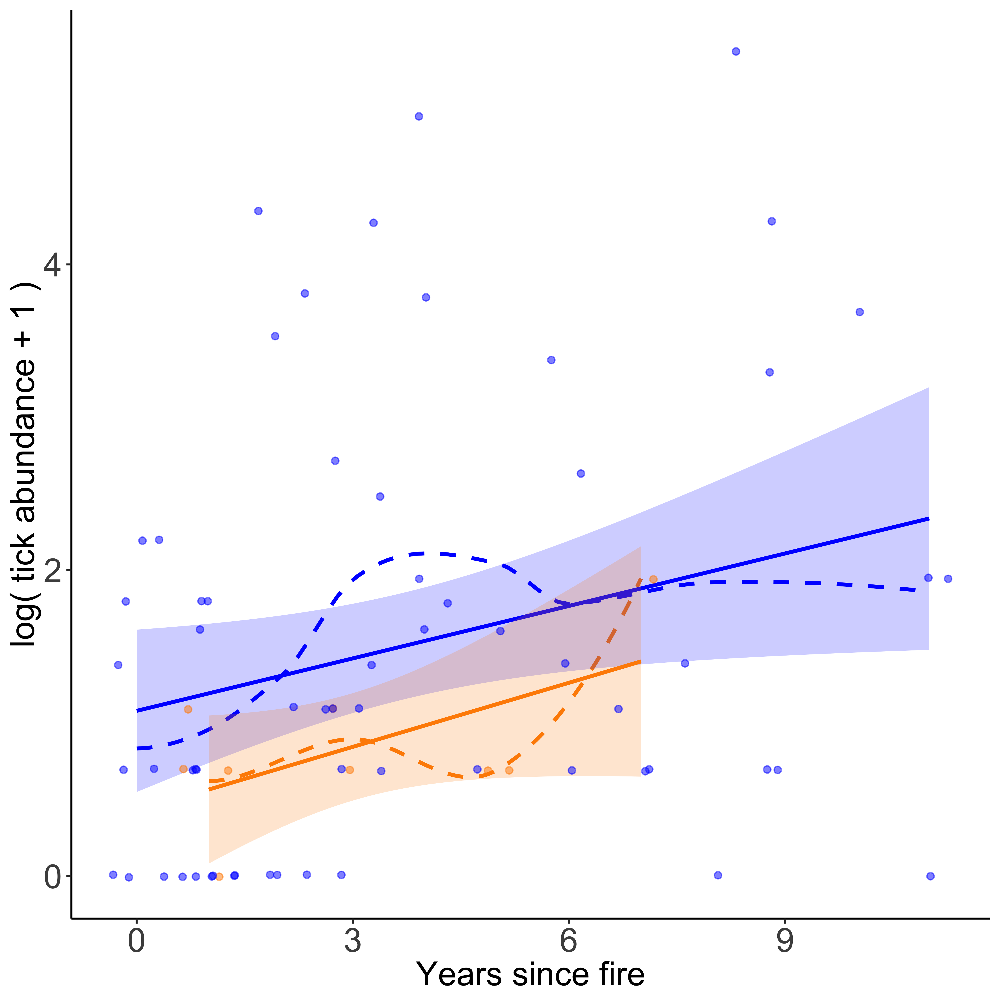
Seasonal sampling

Tick abundance vs. latitude
No relationship, which is expected, though our range of latitude is very small. I plan to use an actual climate variable in the model, e.g. PRISM 30-year normals, WorldClim, DayMet, or possibly data from local weather stations.
Tick abundance vs. plot-level averages
Understory vegetation cover
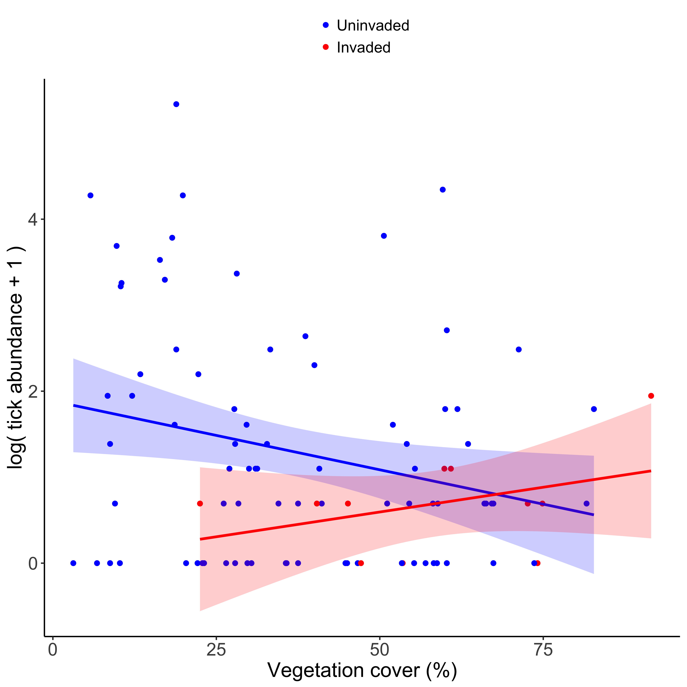
Understory biomass
Log-linear relationship, very noisy trends with many zeroes. Plots associated with invasions had either zero or one ticks.
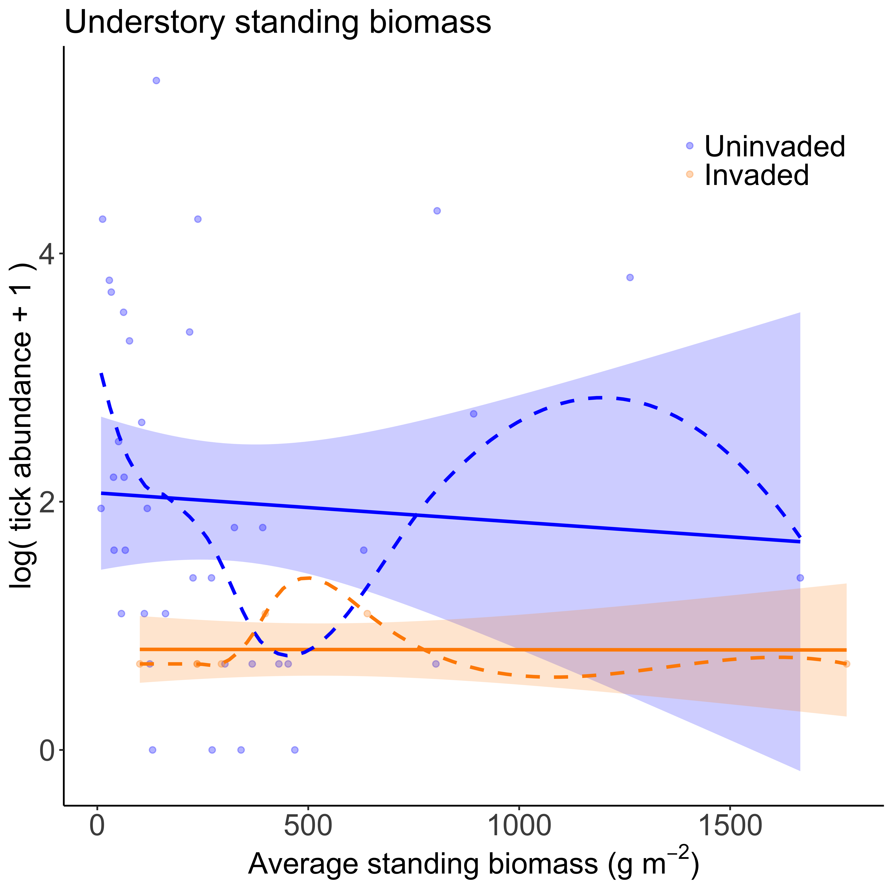
Litter percent cover
 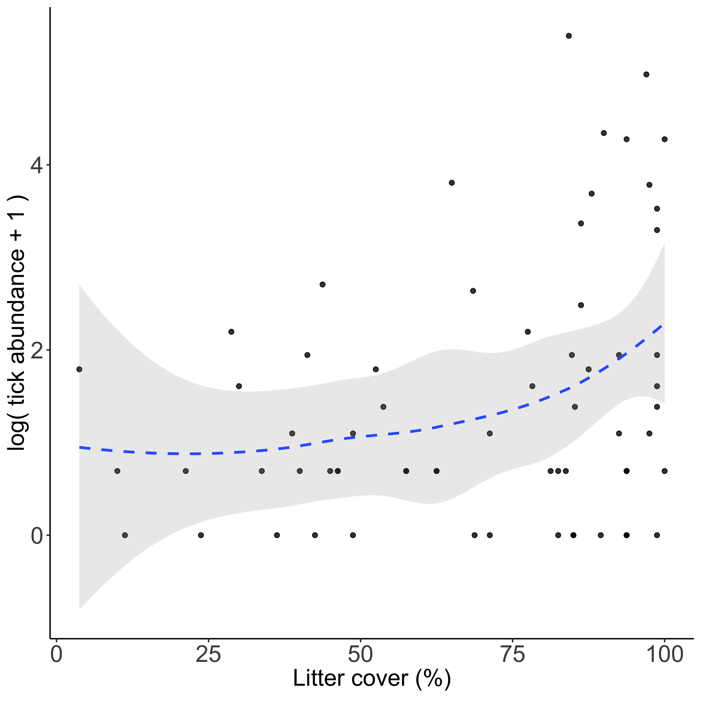
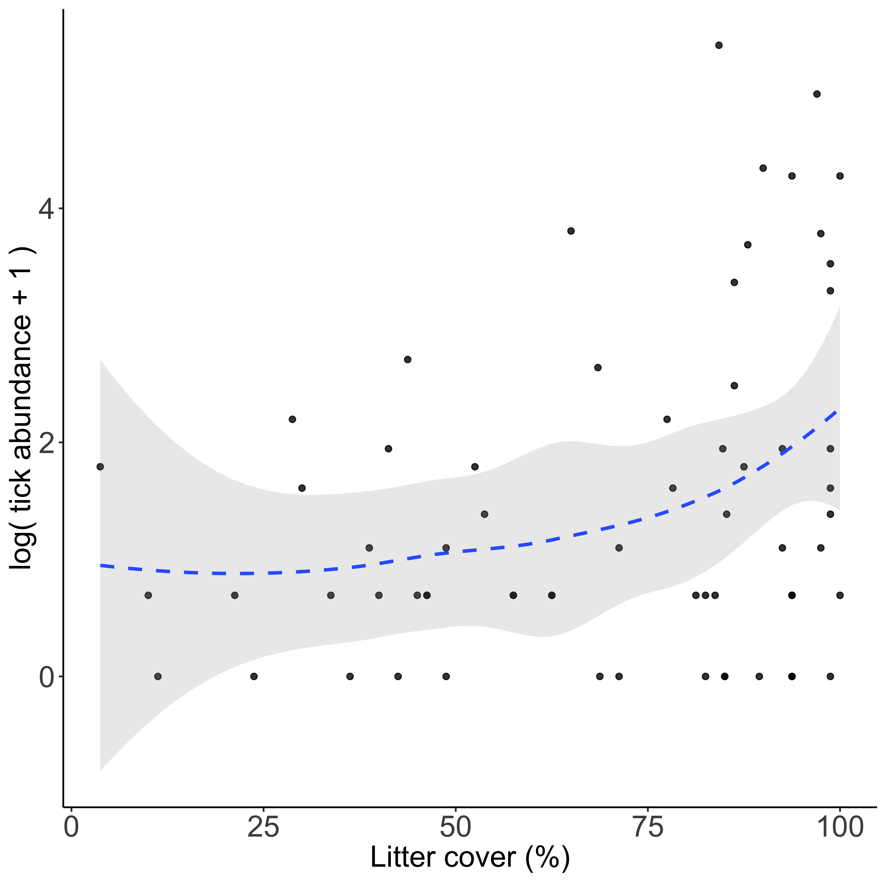
Litter biomass
Tick abundance plotted against dried litter biomass in invaded and uninvaded plots.
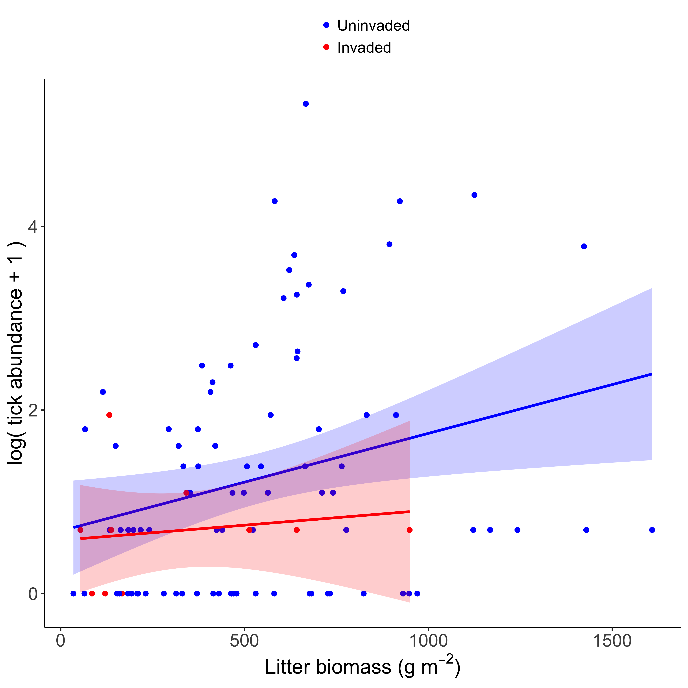
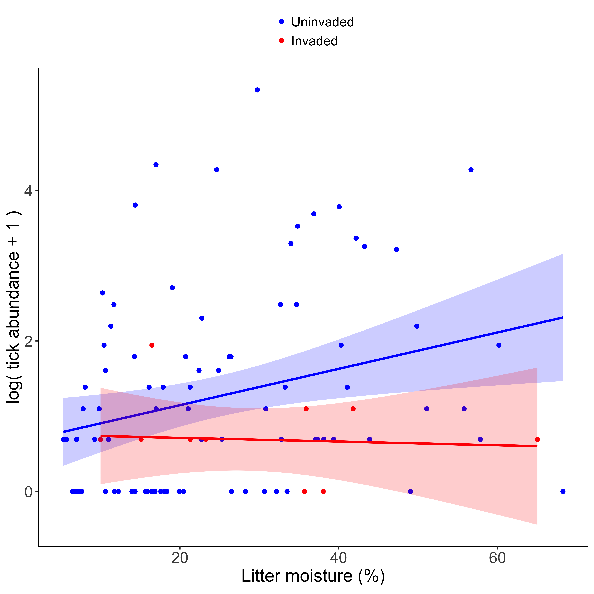
Canopy cover
Log-linear relationship, where there are more ticks in plots with more canopy cover. 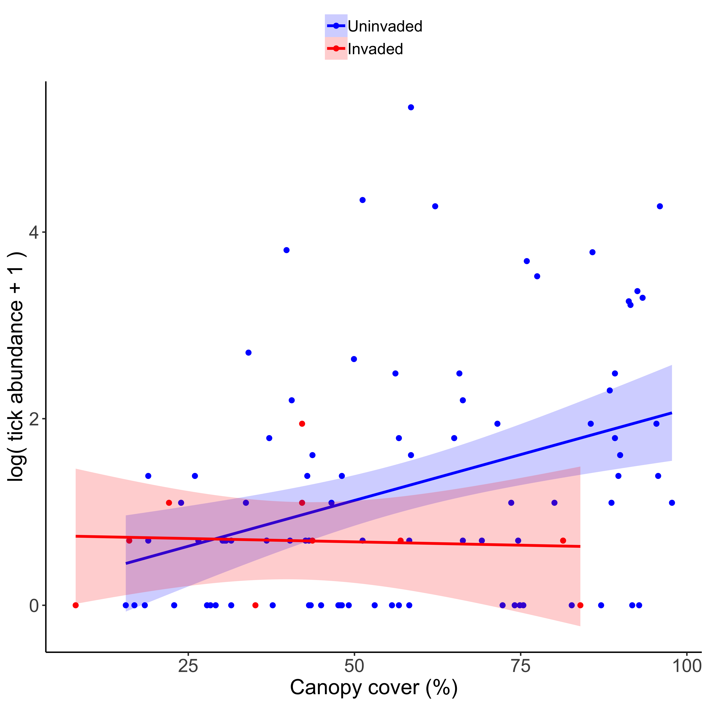
Ticks ~ char height

Ticks ~ hosts
Log-log relationship between tick density and host density
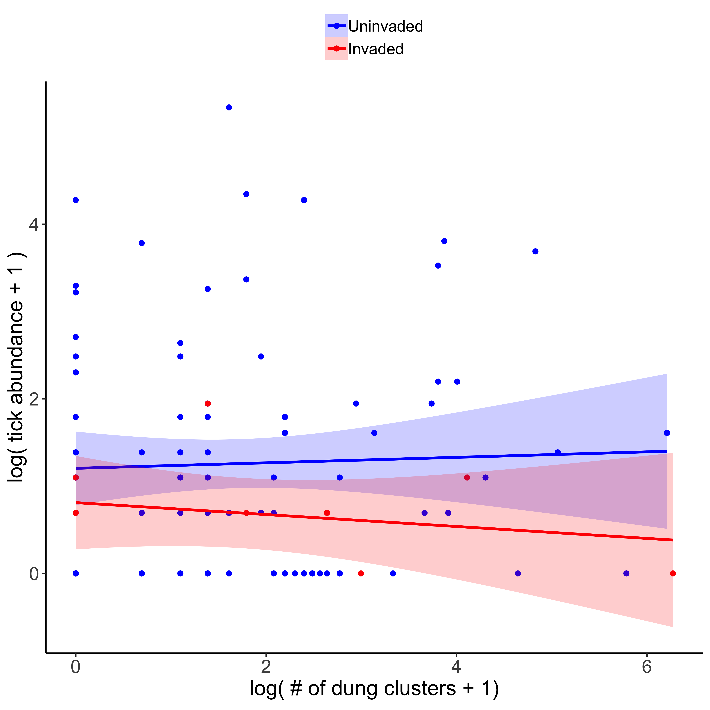
Loess lines are dashed, lines from the linear model are solid, and the black solid line is the overall trend when pooling the data across invaded and uninvaded plots.
Host abundance
Host abundance tended to be slightly lower with increasing canopy cover and time since fire. The trend isn’t significant 

Initial/exploratory linear (OLS) models
##
## Call:
## lm(formula = log1p(total_ticks) ~ years_since_fire, data = tick_data_sum)
##
## Residuals:
## Min 1Q Median 3Q Max
## -2.3110 -0.9938 -0.3439 0.6849 3.5086
##
## Coefficients:
## Estimate Std. Error t value Pr(>|t|)
## (Intercept) 0.98648 0.23716 4.160 8.91e-05 ***
## years_since_fire 0.12041 0.04953 2.431 0.0176 *
## ---
## Signif. codes: 0 '***' 0.001 '**' 0.01 '*' 0.05 '.' 0.1 ' ' 1
##
## Residual standard error: 1.315 on 70 degrees of freedom
## (8 observations deleted due to missingness)
## Multiple R-squared: 0.07787, Adjusted R-squared: 0.0647
## F-statistic: 5.911 on 1 and 70 DF, p-value: 0.01761##
## Call:
## lm(formula = log1p(total_ticks) ~ avg_dry_litter_gm2, data = tick_data_sum)
##
## Residuals:
## Min 1Q Median 3Q Max
## -3.0508 -0.8249 -0.2991 0.8475 3.3081
##
## Coefficients:
## Estimate Std. Error t value Pr(>|t|)
## (Intercept) 0.9109861 0.3343826 2.724 0.00921 **
## avg_dry_litter_gm2 0.0017615 0.0005333 3.303 0.00190 **
## ---
## Signif. codes: 0 '***' 0.001 '**' 0.01 '*' 0.05 '.' 0.1 ' ' 1
##
## Residual standard error: 1.218 on 44 degrees of freedom
## (34 observations deleted due to missingness)
## Multiple R-squared: 0.1987, Adjusted R-squared: 0.1805
## F-statistic: 10.91 on 1 and 44 DF, p-value: 0.001904##
## Call:
## lm(formula = avg_dry_litter_gm2 ~ years_since_fire, data = tick_data_sum)
##
## Residuals:
## Min 1Q Median 3Q Max
## -517.69 -234.17 -23.30 72.18 1037.80
##
## Coefficients:
## Estimate Std. Error t value Pr(>|t|)
## (Intercept) 371.61 77.30 4.807 1.82e-05 ***
## years_since_fire 39.77 15.45 2.574 0.0135 *
## ---
## Signif. codes: 0 '***' 0.001 '**' 0.01 '*' 0.05 '.' 0.1 ' ' 1
##
## Residual standard error: 321 on 44 degrees of freedom
## (34 observations deleted due to missingness)
## Multiple R-squared: 0.1309, Adjusted R-squared: 0.1112
## F-statistic: 6.628 on 1 and 44 DF, p-value: 0.01348##
## Call:
## lm(formula = log1p(total_ticks) ~ avg_canopy_cover, data = tick_data_sum)
##
## Residuals:
## Min 1Q Median 3Q Max
## -2.4975 -0.8197 -0.2361 0.6973 3.7569
##
## Coefficients:
## Estimate Std. Error t value Pr(>|t|)
## (Intercept) 0.169522 0.374747 0.452 0.652694
## avg_canopy_cover 0.025081 0.006442 3.893 0.000258 ***
## ---
## Signif. codes: 0 '***' 0.001 '**' 0.01 '*' 0.05 '.' 0.1 ' ' 1
##
## Residual standard error: 1.219 on 58 degrees of freedom
## (20 observations deleted due to missingness)
## Multiple R-squared: 0.2072, Adjusted R-squared: 0.1935
## F-statistic: 15.16 on 1 and 58 DF, p-value: 0.0002581##
## Call:
## lm(formula = avg_canopy_cover ~ years_since_fire, data = tick_data_sum)
##
## Residuals:
## Min 1Q Median 3Q Max
## -46.004 -17.778 -3.302 17.159 49.161
##
## Coefficients:
## Estimate Std. Error t value Pr(>|t|)
## (Intercept) 43.659 4.812 9.072 1.01e-12 ***
## years_since_fire 2.293 0.934 2.455 0.0171 *
## ---
## Signif. codes: 0 '***' 0.001 '**' 0.01 '*' 0.05 '.' 0.1 ' ' 1
##
## Residual standard error: 23.65 on 58 degrees of freedom
## (20 observations deleted due to missingness)
## Multiple R-squared: 0.09415, Adjusted R-squared: 0.07853
## F-statistic: 6.028 on 1 and 58 DF, p-value: 0.0171Cogongrass Data Sampled from Invasions
To quantify cogongrass biomass, we collected samples of aboveground plant material in a 25cm x 25cm area. Up to three samples were collected in each invaded area in addition to sampling done as part of the larger plot. Maximum cogongrass biomass estimated from 25cm quadrat samples from invasions at DoD installations: g/m2
This is a quick and dirty estimate because there may be some overlap in the data. I need to clean up the calculation be separating out quadrats that have cogongrass in the plot data.
Compare All Quadrat Data to Subset of Data
Percent cover
- litter
- bare ground
- green
Heights
- woody vegetation (3 measurements)
- grassy/herbaceous vegetation (3 measurements)
litter (depth)
If there was no vegetation or litter height to measure then the first vegetation measurement was assigned a value of zero and the other two NA.
We (Drew and I) have been talking about the possibility of further reducing the amount of effort expended to sample vegetation and set up the plot by revising the plot design.
The alternative: We use the 12.6m circular plot with just four vegetation sampling quadrats at 10 meters. Tick traps would be placed near the outside edge of the plot in each of the cardinal directions (north, east, south, west), and one in plot center.
The caveats: 1. Tick trap deployment and vegetation measurements would have to be on different days. 2. We still need to do transects for dung surveys.
My first step was to see how this plays out in the data by testing for differences in means of data summarized across all quadrats (12) to data from the quadrats at 10 meters (4). I subset the data and conducted a series of t-test on the means (averaging across all the 1 meter quadrats in each data set) of woody vegetation height, herbaceous vegetation height, litter depth; and percent covers of bare ground, green vegetation, and litter.
Using all 12 qudrats we have species, while using the four quadrats at 10 meters we have species. This suggests a major difference in species richness, however, some of these are as yet unidentified/grouped and are likely duplicates for both data sets.
A t-test of the log-transformed means for percent cover indicate no statistical difference.
Based on these t-tests there were no statistical differences in the means of these variables aggregated to the plot level.